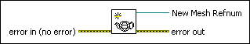
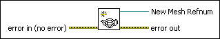

Create Mesh VI
Owning Palette: Geometries VIs
Requires: Full Development System
Creates a 3D mesh to apply to a 3D object that appears in a 3D scene.

 Add to the block diagram Add to the block diagram |
 Find on the palette Find on the palette |
Owning Palette: Geometries VIs
Requires: Full Development System
Creates a 3D mesh to apply to a 3D object that appears in a 3D scene.

| Add to the block diagram |
Find on the palette |
 |
error in describes error conditions that occur before this node runs. This input provides standard error in functionality. |
 |
New Mesh Refnum returns the reference to the mesh. |
 |
error out contains error information. This output provides standard error out functionality. |
Refer to the 3D Curve Graph (ActiveX) VI in the labview\examples\Controls and Indicators\Graphs and Charts\Math Plots - 3D (ActiveX) directory for an example of using the Create Mesh VI.
 Open example Find related examples
Open example Find related examples